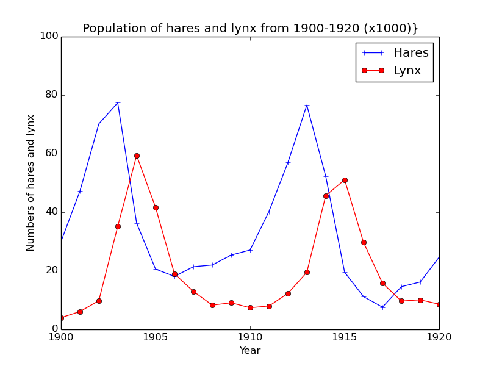

Solving quantum mechanical problems with Machine Learning and Boltzmann machines
Jul 26, 2018
What is this talk about?
The main aim is to give you a short and pedestrian introduction to how we can use Machine Learning methods to solve quantum mechanical many-body problems. And why this could be of interest.
The hope is that after this talk you have gotten the basic ideas to get you started. Peeping into https://github.com/mhjensenseminars/MachineLearningTalk, you'll find a Jupyter notebook, slides, codes etc that will allow you to reproduce the simulations discussed here, and perhaps run your own very first calculations.
Furthermore, since we will also talk about Monte Carlo simulations, the exciting idea of Monte Carlo optimization and Machine Learning can be used to mesh strategies for reducing the curse of dimensionality.
Why?
How can we avoid the dimensionality curse? Many possibilities
- smarter basis functions
- resummation of specific correlations
- stochastic sampling of high-lying states (stochastic FCI, CC and soon SRG)
- many more
Machine Learning and Quantum Computing hold also great promise in tackling the ever increasing dimensionalities. Here we will focus on Machine Learning.
Overview
- Short intro to Machine Learning
- Variational Monte Carlo (Markov Chain Monte Carlo, \( \mathrm{MC}^2 \)) and two-electron quantum dots, solving quantum mechanical problems in a stochastic way. It will serve as our motivation for switching to Machine Learning.
- From Variational Monte Carlo to Boltzmann Machines and Machine Learning
What are the Machine Learning calculations here based on?
This work is inspired by the idea of representing the wave function with a restricted Boltzmann machine (RBM), presented recently by G. Carleo and M. Troyer, Science 355, Issue 6325, pp. 602-606 (2017). They named such a wave function/network a neural network quantum state (NQS). In their article they apply it to the quantum mechanical spin lattice systems of the Ising model and Heisenberg model, with encouraging results.
Thanks to Vilde Flugsrud and Alfred Alocias Mariadason for many discussions and interpretations of the above paper.
A new world
Machine learning (ML) is an extremely rich field, in spite of its young age. The increases we have seen during the last three decades in computational capabilities have been followed by developments of methods and techniques for analyzing and handling large date sets, relying heavily on statistics, computer science and mathematics. The field is rather new and developing rapidly.
Popular software packages written in Python for ML are
- Scikit-learn,
- Tensorflow,
- PyTorch and
- Keras.
These are all freely available at their respective GitHub sites. They encompass communities of developers in the thousands or more. And the number of code developers and contributors keeps increasing.
Lots of room for creativity
Not all the algorithms and methods can be given a rigorous mathematical justification, opening up thereby for experimenting and trial and error and thereby exciting new developments.
A solid command of linear algebra, multivariate theory, probability theory, statistical data analysis, understanding errors and Monte Carlo methods is important in order to understand many of the various algorithms and methods.
A familiarity with ML is almost becoming a prerequisite for many of the most exciting employment opportunities. Add quantum computing and there you are.
Some members of the ML family
- Linear regression and its variants, in essence polynomial regression
- Decision tree algorithms, from simpler to more complex ones like random forests
- Nearest neighbors models
- Bayesian statistics and regression
- Support vector machines and finally various variants of
- Artifical neural networks and deep learning
- ....
What are the basic ingredients?
Almost every problem in ML and data science starts with the same ingredients:
- The dataset \( \mathbf{x} \) (could be some observable quantity of the system we are studying)
- A model which is a function of a set of parameters \( \mathbf{\alpha} \) that relates to the dataset, say a likelihood function \( p(\mathbf{x}\vert \mathbf{\alpha}) \) or just a simple model \( f(\mathbf{\alpha}) \)
- A so-called cost function \( \mathcal{C} (\mathbf{x}, f(\mathbf{\alpha})) \) which allows us to decide how well our model represents the dataset.
We seek to minimize the function \( \mathcal{C} (\mathbf{x}, f(\mathbf{\alpha})) \) by finding the parameter values which minimize \( \mathcal{C} \). This leads to various minimization algorithms.
What is Machine Learning?
Machine learning is the science of giving computers the ability to learn without being explicitly programmed. The idea is that there exist generic algorithms which can be used to find patterns in a broad class of data sets without having to write code specifically for each problem. The algorithm will build its own logic based on the data.
Machine learning is a subfield of computer science, and is closely related to computational statistics. It evolved from the study of pattern recognition in artificial intelligence (AI) research, and has made contributions to AI tasks like computer vision, natural language processing and speech recognition. It has also, especially in later years, found applications in a wide variety of other areas, including bioinformatics, economy, physics, finance and marketing.
You will notice however that many of the basic ideas discussed do come from Physics!
Types of Machine Learning
The approaches to machine learning are many, but are often split into two main categories. In supervised learning we know the answer to a problem, and let the computer deduce the logic behind it. On the other hand, unsupervised learning is a method for finding patterns and relationship in data sets without any prior knowledge of the system. Some authours also operate with a third category, namely reinforcement learning. This is a paradigm of learning inspired by behavioural psychology, where learning is achieved by trial-and-error, solely from rewards and punishment.
Another way to categorize machine learning tasks is to consider the desired output of a system. Some of the most common tasks are:
- Classification: Outputs are divided into two or more classes. The goal is to produce a model that assigns inputs into one of these classes. An example is to identify digits based on pictures of hand-written ones. Classification is typically supervised learning.
- Regression: Finding a functional relationship between an input data set and a reference data set. The goal is to construct a function that maps input data to continuous output values.
- Clustering: Data are divided into groups with certain common traits, without knowing the different groups beforehand. It is thus a form of unsupervised learning.
References
- An excellent reference, Mehta et al., arXiv:1803.08823 and Physics Reports in press (2018)
- A cute paper by Utama and Piekarewicz, Validating neural-network refinements of nuclear mass models, Phys. Rev. C 97, 014306
- Every issue of Physical Review Letters has now one or more articles on ML
- Books and lectures notes
- See also Metha and Schwab, arXiv.1410.3831, how to link Variational renormalization group theory with deep learning (recommended read)
Another interesting article
Here we will use so-called reduced Boltzmann Machines to simulate quantum many-body problems. For Monte Carlo aficionados, there is a very close similarity with what are called shadow wave functions, see the work of Pederiva and Kalos and collaborators, Phys Rev. E 90, 053304 (2014).
Just for fun illustration of scikit-learn: Hudson bay data
Most mammalian predators rely on a variety of prey, which complicates mathematical modeling; however, a few predators have become highly specialized and seek almost exclusively a single prey species. An example of this simplified predator-prey interaction is seen in Canadian northern forests, where the populations of the lynx and the snowshoe hare are intertwined in a life and death struggle.
One reason that this particular system has been so extensively studied is that the Hudson Bay company kept careful records of all furs from the early 1800s into the 1900s. The records for the furs collected by the Hudson Bay company showed distinct oscillations (approximately 12 year periods), suggesting that these species caused almost periodic fluctuations of each other's populations. The table here shows data from 1900 to 1920.
Hares and lynx in Hudson bay from 1900 to 1920

Linear regression in Python
import numpy as np
import matplotlib.pyplot as plt
from IPython.display import display
import sklearn
from sklearn.linear_model import LinearRegression
from sklearn.tree import DecisionTreeRegressor
data = np.loadtxt('src/Hudson_Bay.csv', delimiter=',', skiprows=1)
x = data[:,0]
y = data[:,1]
line = np.linspace(1900,1920,1000,endpoint=False).reshape(-1,1)
reg = DecisionTreeRegressor(min_samples_split=3).fit(x.reshape(-1,1),y.reshape(-1,1))
plt.plot(line, reg.predict(line), label="decision tree")
regline = LinearRegression().fit(x.reshape(-1,1),y.reshape(-1,1))
plt.plot(line, regline.predict(line), label= "Linear Regression")
plt.plot(x, y, label= "Linear Regression")
plt.show()
Artificial neurons
The field of artificial neural networks has a long history of development, and is closely connected with the advancement of computer science and computers in general. A model of artificial neurons was first developed by McCulloch and Pitts in 1943 to study signal processing in the brain and has later been refined by others. The general idea is to mimic neural networks in the human brain, which is composed of billions of neurons that communicate with each other by sending electrical signals. Each neuron accumulates its incoming signals, which must exceed an activation threshold to yield an output. If the threshold is not overcome, the neuron remains inactive, i.e. has zero output.
This behaviour has inspired a simple mathematical model for an artificial neuron.
$$
y = f\left(\sum_{i=1}^n w_ix_i\right) = f(u)
$$
Here, the output \( y \) of the neuron is the value of its activation function, which have as input
a weighted sum of signals \( x_i, \dots ,x_n \) received by \( n \) other neurons.
A simple perceptron model

Neural network types
An artificial neural network (NN), is a computational model that consists of layers of connected neurons, or nodes. It is supposed to mimic a biological nervous system by letting each neuron interact with other neurons by sending signals in the form of mathematical functions between layers. A wide variety of different NNs have been developed, but most of them consist of an input layer, an output layer and eventual layers in-between, called hidden layers. All layers can contain an arbitrary number of nodes, and each connection between two nodes is associated with a weight variable.

The system: two electrons in a harmonic oscillator trap in two dimensions
The Hamiltonian of the quantum dot is given by
$$ \hat{H} = \hat{H}_0 + \hat{V},
$$
where \( \hat{H}_0 \) is the many-body HO Hamiltonian, and \( \hat{V} \) is the
inter-electron Coulomb interactions. In dimensionless units,
$$ \hat{V}= \sum_{i < j}^N \frac{1}{r_{ij}},
$$
with \( r_{ij}=\sqrt{\mathbf{r}_i^2 - \mathbf{r}_j^2} \).
This leads to the separable Hamiltonian, with the relative motion part given by (\( r_{ij}=r \))
$$
\hat{H}_r=-\nabla^2_r + \frac{1}{4}\omega^2r^2+ \frac{1}{r},
$$
plus a standard Harmonic Oscillator problem for the center-of-mass motion.
This system has analytical solutions in two and three dimensions (M. Taut 1993 and 1994).
Quantum Monte Carlo Motivation
Given a hamiltonian \( H \) and a trial wave function \( \Psi_T \), the variational principle states that the expectation value of \( \langle H \rangle \), defined through
$$
\langle E \rangle =
\frac{\int d\boldsymbol{R}\Psi^{\ast}_T(\boldsymbol{R})H(\boldsymbol{R})\Psi_T(\boldsymbol{R})}
{\int d\boldsymbol{R}\Psi^{\ast}_T(\boldsymbol{R})\Psi_T(\boldsymbol{R})},
$$
is an upper bound to the ground state energy \( E_0 \) of the hamiltonian \( H \), that is
$$
E_0 \le \langle H \rangle .
$$
In general, the integrals involved in the calculation of various expectation values are multi-dimensional ones. Traditional integration methods such as the Gauss-Legendre will not be adequate for say the computation of the energy of a many-body system.
Quantum Monte Carlo Motivation
Choose a trial wave function \( \psi_T(\boldsymbol{R}) \).
$$
P(\boldsymbol{R},\boldsymbol{\alpha})= \frac{\left|\psi_T(\boldsymbol{R},\boldsymbol{\alpha})\right|^2}{\int \left|\psi_T(\boldsymbol{R},\boldsymbol{\alpha})\right|^2d\boldsymbol{R}}.
$$
This is our model, or likelihood/probability distribution function (PDF). It depends on some variational parameters \( \boldsymbol{\alpha} \).
The approximation to the expectation value of the Hamiltonian is now
$$
\langle E[\boldsymbol{\alpha}] \rangle =
\frac{\int d\boldsymbol{R}\Psi^{\ast}_T(\boldsymbol{R},\boldsymbol{\alpha})H(\boldsymbol{R})\Psi_T(\boldsymbol{R},\boldsymbol{\alpha})}
{\int d\boldsymbol{R}\Psi^{\ast}_T(\boldsymbol{R},\boldsymbol{\alpha})\Psi_T(\boldsymbol{R},\boldsymbol{\alpha})}.
$$
Quantum Monte Carlo Motivation
$$
E_L(\boldsymbol{R},\boldsymbol{\alpha})=\frac{1}{\psi_T(\boldsymbol{R},\boldsymbol{\alpha})}H\psi_T(\boldsymbol{R},\boldsymbol{\alpha}),
$$
called the local energy, which, together with our trial PDF yields
$$
E[\boldsymbol{\alpha}]=\int P(\boldsymbol{R})E_L(\boldsymbol{R},\boldsymbol{\alpha}) d\boldsymbol{R}\approx \frac{1}{N}\sum_{i=1}^NE_L(\boldsymbol{R_i},\boldsymbol{\alpha})
$$
with \( N \) being the number of Monte Carlo samples.
Quantum Monte Carlo
The Algorithm for performing a variational Monte Carlo calculations runs thus as this
- Initialisation: Fix the number of Monte Carlo steps. Choose an initial \( \boldsymbol{R} \) and variational parameters \( \alpha \) and calculate \( \left|\psi_T(\boldsymbol{R},\boldsymbol{\alpha})\right|^2 \).
- Initialise the energy and the variance and start the Monte Carlo calculation by looping over trials.
- Calculate a trial position \( \boldsymbol{R}_p=\boldsymbol{R}+r*step \) where \( r \) is a random variable \( r \in [0,1] \).
- Metropolis algorithm to accept or reject this move \( w = P(\boldsymbol{R}_p,\boldsymbol{\alpha})/P(\boldsymbol{R},\boldsymbol{\alpha}) \).
- If the step is accepted, then we set \( \boldsymbol{R}=\boldsymbol{R}_p \).
- Update averages
- Finish and compute final averages.
Observe that the jumping in space is governed by the variable step. This is often called brute-force sampling. Need importance sampling to get more relevant sampling.
The trial wave function
We want to perform a Variational Monte Carlo calculation of the ground state of two electrons in a quantum dot well with different oscillator energies, assuming total spin \( S=0 \). Our trial wave function has the following form
$$
\begin{equation}
\psi_{T}(\boldsymbol{r}_1,\boldsymbol{r}_2) =
C\exp{\left(-\alpha_1\omega(r_1^2+r_2^2)/2\right)}
\exp{\left(\frac{r_{12}}{(1+\alpha_2 r_{12})}\right)},
\tag{1}
\end{equation}
$$
where the $\alpha$s represent our variational parameters, two in this case.
Why does the trial function look like this? How did we get there? This will be our main motivation for switching to Machine Learning.
The correlation part of the wave function
To find an ansatz for the correlated part of the wave function, it is useful to rewrite the two-particle local energy in terms of the relative and center-of-mass motion. Let us denote the distance between the two electrons as \( r_{12} \). We omit the center-of-mass motion since we are only interested in the case when \( r_{12} \rightarrow 0 \). The contribution from the center-of-mass (CoM) variable \( {\bf R}_{\mathrm{CoM}} \) gives only a finite contribution. We focus only on the terms that are relevant for \( r_{12} \) and for three dimensions. The relevant local energy becomes then
$$
\lim_{r_{12} \rightarrow 0}E_L(R)=
\frac{1}{{\cal R}_T(r_{12})}\left(2\frac{d^2}{dr_{ij}^2}+\frac{4}{r_{ij}}\frac{d}{dr_{ij}}+
\frac{2}{r_{ij}}-\frac{l(l+1)}{r_{ij}^2}+2E
\right){\cal R}_T(r_{12}) = 0.
$$
Set \( l=0 \) and we have the so-called cusp condition
$$
\frac{d {\cal R}_T(r_{12})}{dr_{12}} = -\frac{1}{2(l+1)}
{\cal R}_T(r_{12})\qquad r_{12}\to 0
$$
Resulting ansatz
The above results in
$$
{\cal R}_T \propto \exp{(r_{ij}/2)},
$$
for anti-parallel spins and
$$
{\cal R}_T \propto \exp{(r_{ij}/4)},
$$
for anti-parallel spins.
This is the so-called cusp condition for the relative motion, resulting in a minimal requirement
for the correlation part of the wave fuction.
For general systems containing more than say two electrons, we have this
condition for each electron pair \( ij \).
The VMC code
# Importing various packages
from math import exp, sqrt
from random import random, seed
import numpy as np
import matplotlib.pyplot as plt
from mpl_toolkits.mplot3d import Axes3D
from matplotlib import cm
from matplotlib.ticker import LinearLocator, FormatStrFormatter
import sys
#Trial wave function for quantum dots in two dims
def WaveFunction(r,alpha,beta):
r1 = r[0,0]**2 + r[0,1]**2
r2 = r[1,0]**2 + r[1,1]**2
r12 = sqrt((r[0,0]-r[1,0])**2 + (r[0,1]-r[1,1])**2)
deno = r12/(1+beta*r12)
return exp(-0.5*alpha*(r1+r2)+deno)
#Local energy for quantum dots in two dims, using analytical local energy
def LocalEnergy(r,alpha,beta):
r1 = (r[0,0]**2 + r[0,1]**2)
r2 = (r[1,0]**2 + r[1,1]**2)
r12 = sqrt((r[0,0]-r[1,0])**2 + (r[0,1]-r[1,1])**2)
deno = 1.0/(1+beta*r12)
deno2 = deno*deno
return 0.5*(1-alpha*alpha)*(r1 + r2) +2.0*alpha + 1.0/r12+deno2*(alpha*r12-deno2+2*beta*deno-1.0/r12)
# The Monte Carlo sampling with the Metropolis algo
def MonteCarloSampling():
NumberMCcycles= 100000
StepSize = 1.0
# positions
PositionOld = np.zeros((NumberParticles,Dimension), np.double)
PositionNew = np.zeros((NumberParticles,Dimension), np.double)
# seed for rng generator
seed()
# start variational parameter
alpha = 0.9
for ia in range(MaxVariations):
alpha += .025
AlphaValues[ia] = alpha
beta = 0.2
for jb in range(MaxVariations):
beta += .01
BetaValues[jb] = beta
energy = energy2 = 0.0
DeltaE = 0.0
#Initial position
for i in range(NumberParticles):
for j in range(Dimension):
PositionOld[i,j] = StepSize * (random() - .5)
wfold = WaveFunction(PositionOld,alpha,beta)
#Loop over MC MCcycles
for MCcycle in range(NumberMCcycles):
#Trial position
for i in range(NumberParticles):
for j in range(Dimension):
PositionNew[i,j] = PositionOld[i,j] + StepSize * (random() - .5)
wfnew = WaveFunction(PositionNew,alpha,beta)
#Metropolis test to see whether we accept the move
if random() < wfnew**2 / wfold**2:
PositionOld = PositionNew.copy()
wfold = wfnew
DeltaE = LocalEnergy(PositionOld,alpha,beta)
energy += DeltaE
energy2 += DeltaE**2
#We calculate mean, variance and error ...
energy /= NumberMCcycles
energy2 /= NumberMCcycles
variance = energy2 - energy**2
error = sqrt(variance/NumberMCcycles)
Energies[ia,jb] = energy
return Energies, AlphaValues, BetaValues
#Here starts the main program with variable declarations
NumberParticles = 2
Dimension = 2
MaxVariations = 10
Energies = np.zeros((MaxVariations,MaxVariations))
AlphaValues = np.zeros(MaxVariations)
BetaValues = np.zeros(MaxVariations)
(Energies, AlphaValues, BetaValues) = MonteCarloSampling()
# Prepare for plots
fig = plt.figure()
ax = fig.gca(projection='3d')
# Plot the surface.
X, Y = np.meshgrid(AlphaValues, BetaValues)
surf = ax.plot_surface(X, Y, Energies,cmap=cm.coolwarm,linewidth=0, antialiased=False)
# Customize the z axis.
zmin = np.matrix(Energies).min()
zmax = np.matrix(Energies).max()
ax.set_zlim(zmin, zmax)
ax.set_xlabel(r'$\alpha$')
ax.set_ylabel(r'$\beta$')
ax.set_zlabel(r'$\langle E \rangle$')
ax.zaxis.set_major_locator(LinearLocator(10))
ax.zaxis.set_major_formatter(FormatStrFormatter('%.02f'))
# Add a color bar which maps values to colors.
fig.colorbar(surf, shrink=0.5, aspect=5)
plt.show()
Technical aspect, improvements and how to define the cost function
The above procedure is not the smartest one. Looping over all variational parameters becomes expensive. Also, we don't use importance sampling and optimizations of the standard deviation (blocking, bootstrap, jackknife). Such codes are included in the above Github address.
We can also be smarter and use minimization methods to find the optimal variational parameters with fewer Monte Carlo cycles and then fire up our heavy artillery.
One way to achieve this is to minimize the energy as function of the variational parameters.
Energy derivatives
To find the derivatives of the local energy expectation value as function of the variational parameters, we can use the chain rule and the hermiticity of the Hamiltonian.
Let us define
$$
\bar{E}_{\alpha_i}=\frac{d\langle E_L\rangle}{d\alpha_i}.
$$
as the derivative of the energy with respect to the variational parameter \( \alpha_i \)
We define also the derivative of the trial function (skipping the subindex \( T \)) as
$$
\bar{\Psi}_{i}=\frac{d\Psi}{d\alpha_i}.
$$
Derivatives of the local energy
The elements of the gradient of the local energy are then (using the chain rule and the hermiticity of the Hamiltonian)
$$
\bar{E}_{i}= 2\left( \langle \frac{\bar{\Psi}_{i}}{\Psi}E_L\rangle -\langle \frac{\bar{\Psi}_{i}}{\Psi}\rangle\langle E_L \rangle\right).
$$
From a computational point of view it means that you need to compute the expectation values of
$$
\langle \frac{\bar{\Psi}_{i}}{\Psi}E_L\rangle,
$$
and
$$
\langle \frac{\bar{\Psi}_{i}}{\Psi}\rangle\langle E_L\rangle
$$
These integrals are evaluted using MC intergration (with all its possible error sources).
We can then use methods like stochastic gradient or other minimization methods to find the optimal variational parameters (I don't discuss this topic here, but these methods are very important in ML).
How do we define our cost function?
We have a model, our likelihood function.
How should we define the cost function?
Meet the variance and its derivatives
Suppose the trial function (our model) is the exact wave function. The action of the hamiltionan on the wave function
$$
H\Psi = \mathrm{constant}\times \Psi,
$$
The integral which defines various
expectation values involving moments of the hamiltonian becomes then
$$
\langle E^n \rangle = \langle H^n \rangle =
\frac{\int d\boldsymbol{R}\Psi^{\ast}(\boldsymbol{R})H^n(\boldsymbol{R})\Psi(\boldsymbol{R})}
{\int d\boldsymbol{R}\Psi^{\ast}(\boldsymbol{R})\Psi(\boldsymbol{R})}=
\mathrm{constant}\times\frac{\int d\boldsymbol{R}\Psi^{\ast}(\boldsymbol{R})\Psi(\boldsymbol{R})}
{\int d\boldsymbol{R}\Psi^{\ast}(\boldsymbol{R})\Psi(\boldsymbol{R})}=\mathrm{constant}.
$$
This gives an important information: If I want the variance, the exact wave function leads to zero variance!
The variance is defined as
$$
\sigma_E = \langle E^2\rangle - \langle E\rangle^2.
$$
Variation is then performed by minimizing both the energy and the variance.
The variance defines the cost function
We can then take the derivatives of
$$
\sigma_E = \langle E^2\rangle - \langle E\rangle^2,
$$
with respect to the variational parameters. The derivatives of the variance can then be used to defined the
so-called Hessian matrix, which in turn allows us to use minimization methods like Newton's method or
standard gradient methods.
This leads to however a more complicated expression, with obvious errors when evaluating integrals by Monte Carlo integration. Less used, see however Filippi and Umrigar. The expression becomes complicated
$$
\bar{E}_{ij} = 2\left[ \langle (\frac{\bar{\Psi}_{ij}}{\Psi}+\frac{\bar{\Psi}_{j}}{\Psi}\frac{\bar{\Psi}_{i}}{\Psi})(E_L-\langle E\rangle)\rangle -\langle \frac{\bar{\Psi}_{i}}{\Psi}\rangle\bar{E}_j-\langle \frac{\bar{\Psi}_{j}}{\Psi}\rangle\bar{E}_i\right] +\langle \frac{\bar{\Psi}_{i}}{\Psi}E_L{_j}\rangle +\langle \frac{\bar{\Psi}_{j}}{\Psi}E_L{_i}\rangle -\langle \frac{\bar{\Psi}_{i}}{\Psi}\rangle\langle E_L{_j}\rangle \langle \frac{\bar{\Psi}_{j}}{\Psi}\rangle\langle E_L{_i}\rangle.
$$
Evaluating the cost function means having to evaluate the above second derivative of the energy.
Boltzmann Machines
Why use a generative model rather than the more well known discriminative deep neural networks (DNN)?
- Discriminitave methods have several limitations: They are mainly supervised learning methods, thus requiring labeled data. And there are tasks they cannot accomplish, like drawing new examples from an unknown probability distribution.
- A generative model can learn to represent and sample from a probability distribution. The core idea is to learn a parametric model of the probability distribution from which the training data was drawn. As an example
- A model for images could learn to draw new examples of cats and dogs, given a training dataset of images of cats and dogs.
- Generate a sample of an ordered or disordered Ising model phase, having been given samples of such phases.
- Model the trial wave function for Monte Carlo calculations
Some similarities and differences from DNNs
- Both use gradient-descent based learning procedures for minimizing cost functions
- Energy based models don't use backpropagation and automatic differentiation for computing gradients, instead turning to Markov Chain Monte Carlo methods.
- DNNs often have several hidden layers. A restricted Boltzmann machine has only one hidden layer, however several RBMs can be stacked to make up Deep Belief Networks, of which they constitute the building blocks.
History: The RBM was developed by amongst others Geoffrey Hinton, called by some the "Godfather of Deep Learning", working with the University of Toronto and Google.
The structure of the RBM network

The network
The network layers:
- A function \( \mathbf{x} \) that represents the visible layer, a vector of \( M \) elements (nodes). This layer represents both what the RBM might be given as training input, and what we want it to be able to reconstruct. This might for example be the pixels of an image, the spin values of the Ising model, or coefficients representing speech.
- The function \( \mathbf{h} \) represents the hidden, or latent, layer. A vector of \( N \) elements (nodes). Also called "feature detectors".
Goals
The goal of the hidden layer is to increase the model's expressive power. We encode complex interactions between visible variables by introducing additional, hidden variables that interact with visible degrees of freedom in a simple manner, yet still reproduce the complex correlations between visible degrees in the data once marginalized over (integrated out).
Examples of this trick being employed in physics:
- The Hubbard-Stratonovich transformation
- The introduction of ghost fields in gauge theory
- Shadow wave functions in Quantum Monte Carlo simulations
The network parameters, to be optimized/learned:
- \( \mathbf{a} \) represents the visible bias, a vector of same length as \( \mathbf{x} \).
- \( \mathbf{b} \) represents the hidden bias, a vector of same lenght as \( \mathbf{h} \).
- \( W \) represents the interaction weights, a matrix of size \( M\times N \).
Joint distribution and the Energy function
The restricted Boltzmann machine is described by a Bolztmann distribution
$$
\begin{align}
P_{rbm}(\mathbf{x},\mathbf{h}) = \frac{1}{Z} e^{-\frac{1}{T_0}E(\mathbf{x},\mathbf{h})},
\tag{2}
\end{align}
$$
where \( Z \) is the normalization constant or partition function, defined as
$$
\begin{align}
Z = \int \int e^{-\frac{1}{T_0}E(\mathbf{x},\mathbf{h})} d\mathbf{x} d\mathbf{h}.
\tag{3}
\end{align}
$$
It is common to ignore \( T_0 \) by setting it to one.
Network Elements
The function \( E(\mathbf{x},\mathbf{h}) \) gives the energy of a configuration (pair of vectors) \( (\mathbf{x}, \mathbf{h}) \). The lower the energy of a configuration, the higher the probability of it. This function also depends on the parameters \( \mathbf{a} \), \( \mathbf{b} \) and \( W \). Thus, when we adjust them during the learning procedure, we are adjusting the energy function to best fit our problem.
Defining different types of RBMs
There are different variants of RBMs, and the differences lie in the types of visible and hidden units we choose as well as in the implementation of the energy function \( E(\mathbf{x},\mathbf{h}) \).
RBMs were first developed using binary units in both the visible and hidden layer. The corresponding energy function is defined as follows:
$$
\begin{align}
E(\mathbf{x}, \mathbf{h}) = - \sum_i^M x_i a_i- \sum_j^N b_j h_j - \sum_{i,j}^{M,N} x_i w_{ij} h_j,
\tag{4}
\end{align}
$$
where the binary values taken on by the nodes are most commonly 0 and 1.
Another varient is the RBM where the visible units are Gaussian while the hidden units remain binary:
$$
\begin{align}
E(\mathbf{x}, \mathbf{h}) = \sum_i^M \frac{(x_i - a_i)^2}{2\sigma_i^2} - \sum_j^N b_j h_j - \sum_{i,j}^{M,N} \frac{x_i w_{ij} h_j}{\sigma_i^2}.
\tag{5}
\end{align}
$$
More about RBMs
- Useful when we model continuous data (i.e., we wish \( \mathbf{x} \) to be continuous)
- Requires a smaller learning rate, since there's no upper bound to the value a component might take in the reconstruction
Other types of units include:
- Softmax and multinomial units
- Gaussian visible and hidden units
- Binomial units
- Rectified linear units
Sampling: Metropolis sampling
In order to sample from the RBM probability distribution it is common to use Markov Chain Monte Carlo (MCMC) algorithms such as Metropolis-Hastings or Gibbs sampling.Metropolis sampling starts by suggesting a new configuration \( \boldsymbol{x}^{k+1} \). In the brute force method this is done by some random change of the visible units. The new configuration is then accepted with the acceptance probability
$$
\begin{align}
A(\boldsymbol{x}^k \rightarrow \boldsymbol{x}^{k+1}) = \text{min} (1, \frac{P(\boldsymbol{x}^{k+1})}{P(\boldsymbol{x}^k)}),
\tag{6}
\end{align}
$$
where we need the marginalized probability
$$
\begin{align}
P(\boldsymbol{x}) &= \sum_\mathbf{h} P_{rbm}(\mathbf{x}, \mathbf{h})
\tag{7}\\
&= \frac{1}{Z}\sum_\mathbf{h} e^{-E(\mathbf{x}, \mathbf{h})}.
\tag{8}
\end{align}
$$
Sampling: Gibbs sampling
In this method we sample from the joint probability \( P_{rbm} (\mathbf{x}, \mathbf{h}) \) by way of a two step sampling process. We alternately update the visible and hidden units. New samples are generated according to the conditional probabilities \( P(x_i|\mathbf{h}) \) and \( P(h_j|\mathbf{x}) \) respectively and accepted with the probability of \( 1 \). While the the visible nodes are dependent on the hidden nodes and vice versa, the nodes are independent of other nodes within the same layer. This is due to there being no intra layer interactions in the restricted Boltzmann machine.
The conditional probabilities are often referred to as the activitation functions in the neural networks context due to their role in determining the node outputs. For the binary-binary RBM they are
$$
\begin{align}
P(h_j = 1 | \boldsymbol{x}) &= \frac{1}{1 + e^{-b_j - \sum_i x_i w_{ij}}}
\tag{9}\\
P(x_i = 1 | \boldsymbol{h}) &= \frac{1}{1 + e^{-a_j - \sum_j h_j w_{ij}}},
\tag{10}
\end{align}
$$
where we recognize the logistic sigmoid function \( \sigma (x) = 1/(1+exp(-x)) \).
Gaussian RBM
For the Gaussian-Binary RBM the conditional probabilities are
$$
\begin{align}
P(x_i|\mathbf{h}) &= \mathcal{N}(x_i; a_i+ \sum_j h_j w_{ij}, \sigma^2)
\tag{11}\\
P(h_j=1|\mathbf{x}) &= \frac{1}{1+e^{-b_j-\frac{1}{\sigma^2} \sum_i x_i w_{ij}}},
\tag{12}
\end{align}
$$
while the visible units now follow a normal distribution, we see the hidden units again follow the logistic sigmoid function.
Cost function
When working with a training dataset, the most common training approach is maximizing the log-likelihood of the training data. The log likelihood characterizes the log-probability of generating the observed data using our generative model. Using this method our cost function is chosen as the negative log-likelihood. The learning then consists of trying to find parameters that maximize the probability of the dataset, and is known as Maximum Likelihood Estimation (MLE). Denoting the parameters as \( \boldsymbol{\theta} = a_1,...,a_M,b_1,...,b_N,w_{11},...,w_{MN} \), the log-likelihood is given by
$$
\begin{align}
\mathcal{L}(\{ \theta_i \}) &= \langle \text{log} P_\theta(\boldsymbol{x}) \rangle_{data}
\tag{13}\\
&= - \langle E(\boldsymbol{x}; \{ \theta_i\}) \rangle_{data} - \text{log} Z(\{ \theta_i\}),
\tag{14}
\end{align}
$$
where we used that the normalization constant does not depend on the data, \( \langle \text{log} Z(\{ \theta_i\}) \rangle = \text{log} Z(\{ \theta_i\}) \)
Our cost function is the negative log-likelihood, \( \mathcal{C}(\{ \theta_i \}) = - \mathcal{L}(\{ \theta_i \}) \)
Optimization / Training
The training procedure of choice often is Stochastic Gradient Descent (SGD). It consists of a series of iterations where we update the parameters according to the equation
$$
\begin{align}
\boldsymbol{\theta}_{k+1} = \boldsymbol{\theta}_k - \eta \nabla \mathcal{C} (\boldsymbol{\theta}_k)
\tag{15}
\end{align}
$$
at each \( k \)-th iteration. There are a range of variants of the algorithm which aim at making the learning rate \( \eta \) more adaptive so the method might be more efficient while remaining stable.
We now need the gradient of the cost function in order to minimize it. We find that
$$
\begin{align}
\frac{\partial \mathcal{C}(\{ \theta_i\})}{\partial \theta_i}
&= \langle \frac{\partial E(\boldsymbol{x}; \theta_i)}{\partial \theta_i} \rangle_{data}
+ \frac{\partial \text{log} Z(\{ \theta_i\})}{\partial \theta_i}
\tag{16}\\
&= \langle O_i(\boldsymbol{x}) \rangle_{data} - \langle O_i(\boldsymbol{x}) \rangle_{model},
\tag{17}
\end{align}
$$
where in order to simplify notation we defined the "operator"
$$
\begin{align}
O_i(\boldsymbol{x}) = \frac{\partial E(\boldsymbol{x}; \theta_i)}{\partial \theta_i},
\tag{18}
\end{align}
$$
and used the statistical mechanics relationship between expectation values and the log-partition function:
$$
\begin{align}
\langle O_i(\boldsymbol{x}) \rangle_{model} = \text{Tr} P_\theta(\boldsymbol{x})O_i(\boldsymbol{x}) = - \frac{\partial \text{log} Z(\{ \theta_i\})}{\partial \theta_i}.
\tag{19}
\end{align}
$$
More on RBMs
The data-dependent term in the gradient is known as the positive phase of the gradient, while the model-dependent term is known as the negative phase of the gradient. The aim of the training is to lower the energy of configurations that are near observed data points (increasing their probability), and raising the energy of configurations that are far from observed data points (decreasing their probability).
The gradient of the negative log-likelihood cost function of a Binary-Binary RBM is then
$$
\begin{align}
\frac{\partial \mathcal{C} (w_{ij}, a_i, b_j)}{\partial w_{ij}} =& \langle x_i h_j \rangle_{data} - \langle x_i h_j \rangle_{model}
\tag{20}\\
\frac{\partial \mathcal{C} (w_{ij}, a_i, b_j)}{\partial a_{ij}} =& \langle x_i \rangle_{data} - \langle x_i \rangle_{model}
\tag{21}\\
\frac{\partial \mathcal{C} (w_{ij}, a_i, b_j)}{\partial b_{ij}} =& \langle h_i \rangle_{data} - \langle h_i \rangle_{model}.
\tag{22}\\
\tag{23}
\end{align}
$$
To get the expecation values with respect to the data, we set the visible units to each of the observed samples in the training data, then update the hidden units according to the conditional probability found before. We then average over all samples in the training data to calculate expectation values with respect to the data.
Which sampling to use
To get the expectation values with respect to the model, we use Gibbs sampling. We can either initialize the \( \boldsymbol{x} \) randomly or with a training sample. While we ideally want a large number of Gibbs iterations \( n\rightarrow n \), one might decide to truncate it earlier for efficiency. Doing this while having intialized \( \boldsymbol{x} \) with a training data vector is referred to as contrastive divergence (CD), because one is then closer to approximating the gradient of this function than the negative log-likelihood. The contrastive divergence function is the difference between two Kullback-Leibler divergences (also called relative entropy), which measure how one probability distribution diverges from a second, expected probability distribution (in this case the estimated one from the ground truth one).
RBMs for the quantum many body problem
The idea of applying RBMs to quantum many body problems was presented by G. Carleo and M. Troyer, working with ETH Zurich and Microsoft Research.
Some of their motivation included
- "The wave function \( \Psi \) is a monolithic mathematical quantity that contains all the information on a quantum state, be it a single particle or a complex molecule. In principle, an exponential amount of information is needed to fully encode a generic many-body quantum state."
- There are still interesting open problems, including fundamental questions ranging from the dynamical properties of high-dimensional systems to the exact ground-state properties of strongly interacting fermions.
- The difficulty lies in finding a general strategy to reduce the exponential complexity of the full many-body wave function down to its most essential features. That is
- \( \rightarrow \) Dimensional reduction
- \( \rightarrow \) Feature extraction
- Among the most successful techniques to attack these challenges, artifical neural networks play a prominent role.
- Want to understand whether an artifical neural network may adapt to describe a quantum system.
Choose the right RBM
Carleo and Troyer applied the RBM to the quantum mechanical spin lattice systems of the Ising model and Heisenberg model, with encouraging results. Our goal is to test the method on systems of moving particles. For the spin lattice systems it was natural to use a binary-binary RBM, with the nodes taking values of 1 and -1. For moving particles, on the other hand, we want the visible nodes to be continuous, representing position coordinates. Thus, we start by choosing a Gaussian-binary RBM, where the visible nodes are continuous and hidden nodes take on values of 0 or 1. If eventually we would like the hidden nodes to be continuous as well the rectified linear units seem like the most relevant choice.
Representing the wave function
The wavefunction should be a probability amplitude depending on \( \boldsymbol{x} \). The RBM model is given by the joint distribution of \( \boldsymbol{x} \) and \( \boldsymbol{h} \)
$$
\begin{align}
F_{rbm}(\mathbf{x},\mathbf{h}) = \frac{1}{Z} e^{-\frac{1}{T_0}E(\mathbf{x},\mathbf{h})}.
\tag{24}
\end{align}
$$
To find the marginal distribution of \( \boldsymbol{x} \) we set:
$$
\begin{align}
F_{rbm}(\mathbf{x}) &= \sum_\mathbf{h} F_{rbm}(\mathbf{x}, \mathbf{h})
\tag{25}\\
&= \frac{1}{Z}\sum_\mathbf{h} e^{-E(\mathbf{x}, \mathbf{h})}.
\tag{26}
\end{align}
$$
Now this is what we use to represent the wave function, calling it a neural-network quantum state (NQS)
$$
\begin{align}
\Psi (\mathbf{X}) &= F_{rbm}(\mathbf{x})
\tag{27}\\
&= \frac{1}{Z}\sum_{\boldsymbol{h}} e^{-E(\mathbf{x}, \mathbf{h})}
\tag{28}\\
&= \frac{1}{Z} \sum_{\{h_j\}} e^{-\sum_i^M \frac{(x_i - a_i)^2}{2\sigma^2} + \sum_j^N b_j h_j + \sum_{i,j}^{M,N} \frac{x_i w_{ij} h_j}{\sigma^2}}
\tag{29}\\
&= \frac{1}{Z} e^{-\sum_i^M \frac{(x_i - a_i)^2}{2\sigma^2}} \prod_j^N (1 + e^{b_j + \sum_i^M \frac{x_i w_{ij}}{\sigma^2}}).
\tag{30}\\
\tag{31}
\end{align}
$$
Choose the cost function
Now we don't necessarily have training data (unless we generate it by using some other method). However, what we do have is the variational principle which allows us to obtain the ground state wave function by minimizing the expectation value of the energy of a trial wavefunction (corresponding to the untrained NQS). Similarly to the traditional variational Monte Carlo method then, it is the local energy we wish to minimize. The gradient to use for the stochastic gradient descent procedure is
$$
\begin{align}
G_i = \frac{\partial \langle E_L \rangle}{\partial \theta_i}
= 2(\langle E_L \frac{1}{\Psi}\frac{\partial \Psi}{\partial \theta_i} \rangle - \langle E_L \rangle \langle \frac{1}{\Psi}\frac{\partial \Psi}{\partial \theta_i} \rangle ),
\tag{32}
\end{align}
$$
where the local energy is given by
$$
\begin{align}
E_L = \frac{1}{\Psi} \hat{\mathbf{H}} \Psi.
\tag{33}
\end{align}
$$
Running the codes
You can find the codes for the simple two-electron case at the Github repository https://github.com/mhjensenseminars/MachineLearningTalk/tree/master/doc/Programs/MLcpp/src. Python codes to come, only c++ as of now.
The trial wave function is based on the product of a Slater determinant with Gaussian orbitals, a simple Jastrow factor \( \exp{(r_{ij})} \) and the reduced Boltzmann machines.
The Broyden-Fletcher-Goldfarb-Shanno algorithm was used to perform the minimization. We used \( 14 \) hidden nodes in the calculations below.
Energy as function of iterations, \( N=2 \) electrons

Energy as function of iterations, \( N=6 \) electrons

Conclusions and where do we stand
- A simple extension of the work of G. Carleo and M. Troyer, Science 355, Issue 6325, pp. 602-606 (2017) gives excellent results for two-electron systems as well as good agreement with standard VMC calculations for \( N=6 \) and \( N=12 \) electrons.
- Minimization problem can be tricky.
- Anti-symmetry dealt with multiplying the trail wave function with an optimized Slater determinant.
- To come: Analysis of wave function from ML and compare with diffusion and Variational Monte Carlo calculations as well as the analytical results of Taut for the two-electron case.
- Extend to more fermions. How do we deal with the antisymmetry of the multi-fermion wave function?
- Here we used standard Hartree-Fock theory to define an optimal Slater determinant. Takes care of the antisymmetry. What about constructing an anti-symmetrized network function?
- Use thereafter ML to determine the correlated part of the wafe function (including a standard Jastrow factor).
- Test this for multi-fermion systems and compare with other many-body methods.
- Can we use ML to find out which correlations are relevant and thereby diminish the dimensionality problem in say CC or SRG theories?